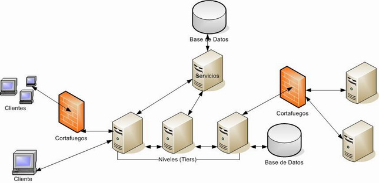
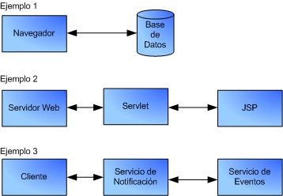
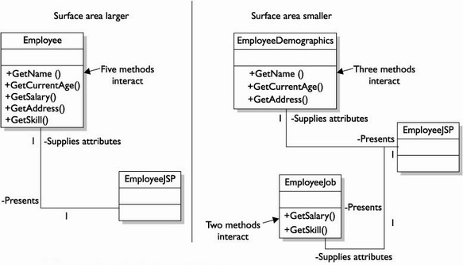
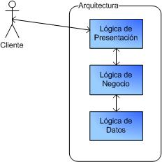
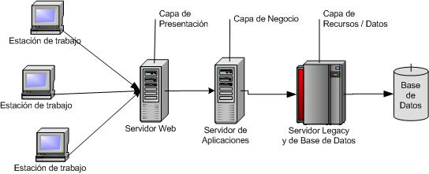

Arquitectura de Aplicaciones
Sí, una profesión muy respetable. Profesionales que estudian el problema antes de resolverlo. ¿Habéis visto a algún arquitecto levantar una pared antes de estudiar cual es la mejor orientación de una vivienda, estudiar si el suelo va a soportar 3 pisos en altura, estudiar si la calidad de los materiales a emplear es inferior a la deseada por el comprador, etc... ?
Así pues, tenemos una similitud con el mundo "del ladrillo". Antes de construir cualquier casa, se necesita un proyecto de arquitectura donde se estudian y reflejan todos los elementos de la futura edificación. ¿Por qué cuando vamos a realizar una aplicación no realizamos primero un plano de la arquitectura del software?
Arquitectura del Software
Existen muchas y diferentes definiciones de la palabra arquitectura. La Real Academia Española de la Lengua la define como el "Arte de proyectar y construir edificios". También ofrece otra entrada relacionada con la informática como la "Estructura lógica y física de los componentes de un computador".
El concepto de Arquitectura del Software (AS) nace a finales de los años 60, cuando Edsger Dijkstra propuso que se estableciera una estructuración correcta de los sistemas de software antes de lanzarse a programar, escribiendo código de cualquiera manera.
Durante esta sesión y a lo largo del presente curso presentamos una variación de estas definiciones más orientada al software.
La Arquitectura del Software se refiere a la representación abstracta de los componentes y comportamientos de un sistema. Idealmente, la arquitectura no contiene detalles de la implementación (se deja para los desarrolladores). El arquitecto trata con la información del problema y diseña una solución, la cual satisface los requerimientos funcionales y no funcionales del cliente, siendo una solución flexible que evoluciona cuando los requerimientos cambian.
Es muy útil pensar en el concepto de arquitectura como el esqueleto para construir un sistema. De este modo, la arquitectura compone un conjunto de principios, estándares, protocolos, frameworks y directivas que dirigen los diversos elementos del diseño de toda aplicación.
Antes de la entrada de Internet, la creación de la arquitectura de un sistema era 10 veces más fácil que el día de hoy. Antes de la explosión de Internet, un arquitecto creaba una arquitectura para gestionar los usuarios internos de una compañía (alrededor de 100). Sin embargo, Internet ha abierto los recursos de la compañía a sus clientes, lo que significa que el arquitecto ahora debe crear una arquitectura de sistema que pueda gestionar a miles de usuarios con patrones de uso y comportamiento impredecibles.
Por lo tanto, la respuesta esta en la escalabilidad y la distribución de las aplicaciones. La siguiente figura muestra un ejemplo de un sistema altamente distribuido.

Crear una Arquitectura
Definir la arquitectura es un proceso creativo. Uno de los retos del arquitecto es equilibrar la creatividad con el pragmatismo mediante las tecnologías disponibles en forma de modelos, frameworks y patrones. La arquitectura puede hacer referencia a un producto (la arquitectura de un edificio), o hacer referencia a un método o estilo (la arquitectura de un rascacielos). Además, la arquitectura debe ser reconfigurable para responder tanto a un entorno dinámico como a las peticiones por parte del cliente.
Cuando creamos una arquitectura describimos la estructura del sistema a construir, y como dicha estructura ofrece soporte a los requisitos de negocio y a los no funcionales. Se puede definir la estructura del sistema como el mecanismo que el sistema utiliza para resolver problemas comunes del sistema. Un mecanismo es una capacidad que ofrece soporte a los requisitos de negocio de un modo consistente y uniforme. Por ejemplo, la persistencia es una mecanismo que debería utilizarse consistentemente a lo largo del sistema. Esto significa que cada vez que el sistema utiliza la persistencia, se realiza del mismo modo. Al definir la persistencia como un mecanismo arquitectónico, se ofrece un método por defecto de gestionar la persistencia que todos los diseñadores deben seguir e implementar de un modo consistente. Los mecanismos arquitectónicos, tales como persistencia, distribución, comunicación, gestión de transacciones, y seguridad son las infraestructuras sobre las cuales se construirá el sistema y se deben definir en la arquitectura.
¿Qué significa crear una arquitectura?
Significa transformar los problemas de negocio en soluciones técnicas, lo que implica responsabilidades tanto tecnológicas como de gestión.
- Responsabilidades Tecnológicas
- identificar los casos de uso significantes para la arquitectura
- guiar el desarrollo de prototipos
- Responsabilidades de Gestión
- ofrecer información y ayuda para la gestión de costes
- gestionar las comunicaciones con el equipo de desarrollo para
- refinar y clarificar los requisitos
- generar confianza en los clientes/accionistas
- formar a los miembros del equipo
Significa crear una infraestructura de software que encare los requisitos no funcionales identificados en el sistema. Por ejemplo, si el sistema tiene requisitos que fijan que los tiempos de respuesta deben ser inferiores a 3 segundos, entonces ésta infraestructura debe asegurar que el sistema cumplirá dicho requisito.
Significa ofrecer a los desarrolladores la infraestructura que les permita diseñar y codificar el sistema sin preocuparse en comprometer los requisitos no funcionales.
Arquitectura vs Diseño
Uno de los temas críticos alrededor de la arquitectura es ¿Cuando se acaba la creación de la arquitectura y cuando comienza el proceso de diseño? No existe una respuesta definitiva para cada sistema. Este hecho se puede acotar en términos de necesidad y control.
| Arquitectura | Diseño | |
|---|---|---|
| Nivel de Abstracción | Visión amplia y alta en pocos aspectos | Atención detallada en muchos aspectos bajos y específicos |
| Entregables | Planos de sistema y subsistemas, y prototipos arquitectónicos | Diseño de componentes, especificaciones de código |
| Área de Atención | Requisitos no funcionales | Requisitos funcionales |
La arquitectura define qué es lo que se va a construir, y el diseño perfila cómo se va a hacer. La arquitectura se controla por una o pocas personas que se centran en la visión global y en cambio, el diseño por muchas personas que se centran en los detalles de cómo lograr la visión global. Un arquitecto crea una arquitectura hasta el punto que el equipo de diseño la puede utilizar para hacer que el sistema logre todos sus objetivos. Por lo tanto, si hemos de crear una arquitectura para desarrolladores expertos, quizás no entraremos tan en detalle como si tuvieses a desarrolladores con menos experiencia.
Conforme se crea una arquitectura para satisfacer los requisitos de negocio y no funcionales de un sistema, el presupuesto para adquirir hardware, software y recursos de desarrollo son limitados, de modo que el sistema debe desarrollarse bajo estas premisas. Por ejemplo, ¿cómo podemos hacer que el sistema escale para lograr la demanda del cliente cuando solo tenemos un único ordenador para todos los servicios? ¿cómo crear una arquitectura sin dinero para comprar productos software? Tarde o temprano, las dificultades aparecen, y se deben estudiar los pros y los contra para solventar este tipo de problemas.
Conforme se superan las dificultades evaluando el correcto equilibrio, es importante que cada decisión tomada respecto a la arquitectura quede registrada. Si tomamos una decisión sobre instalar una base de datos Oracle para persistir la información de la aplicación, debemos documentar esta decisión justificando porqué hemos elegido Oracle respecto a otros proveedores. Esto permite que el resto del equipo de desarrollo o integrantes que entran en fases tardías comprendan porqué se tomaron ciertas decisiones y previene el tener que justificar continuamente las decisiones tomadas.
La mayoría de las decisiones tomadas al crear la arquitectura se centran en los requisitos no funcionales o mecanismos asociados a estos requisitos. La mayoría de los sistemas no disponen de un presupuesto inicial que permita adquirir los elementos necesarios para cumplir los requisitos. Si un sistema hardware de alta disponibilidad 24x7 emplea todo nuestro presupuesto, no dispondremos de suficiente dinero para comprar un servidor de aplicaciones que nos ayude a cumplir el resto de requisitos en el lado del software. Debemos ajustar la arquitectura para ceñirse al presupuesto, y estos ajustes dependen tanto del sistema que estamos creando como de la relación que mantengamos con nuestro cliente.
Rol del Arquitecto
Claramente Vitruvio no se refería a un arquitecto de software, pero la idea yace sobre las mismas características. Un arquitecto es una persona polifacético, madura, con experiencia, educada, que aprende de forma rápida, un líder con dotes de mando y buena comunicación, pudiendo tomar decisiones en los momentos difíciles.
Para que un arquitecto sea polifacético, debe tener conocimiento del negocio o del dominio del problema. Puede obtener este conocimiento mediante la experiencia o la formación. Además, los arquitectos deben tener un dominio alto de las tecnologías. Un arquitecto puede ser un experto es una tecnología particular, pero al menos debe tener conocimientos general de todas las tecnologías competentes respecto a qué tecnología es mejor para tomar decisiones sobre una base sólida. Un buen arquitecto evalúa todas las posibles soluciones de un problema independientemente de la tecnología a utilizar.
Realmente, ¿Qué hace el arquitecto? ¿Cual es la diferencia entre un arquitecto y un desarrollador senior? Las tareas de un diseñador están relacionadas con lo que ocurre cuando un usuario pulsa un botón de una aplicación. En cambio, un arquitecto se tiene que preocupar de lo que ocurre cuando ese mismo botón lo pulsan 10.000 usuarios. Así pues, un arquitecto reduce los riesgos técnicos (elementos desconocidos, sin probar, ...) asociados con un sistema.
Los riesgos se asocian con los requerimientos a nivel de servicios, y de modo ocasional, se asocian a requisitos de negocio. Independientemente del tipo de riesgo, es más fácil identificar los riesgos del proyecto mientras creamos la arquitectura que hacerlo durante la fase de construcción, cuando ya existe una base de código implementada que potencialmente tenga algún riesgo que solventar.
El arquitecto debe liderar al equipo de desarrollo asegurándose que los desarrolladores y diseñadores construyen el sistema acorde a la arquitectura. Como líder, debe tomar decisiones sobre las dificultades del sistema. Para liderar, debe tener destreza en la escritura y ser un buen orador. Es responsabilidad del arquitecto transmitir el conocimiento del sistema (ya sea mediante modelos visuales o reuniones en grupo) a los desarrolladores, los cuales lo van a implementar. Si el arquitecto no se comunica de un modo efectivo, casi seguro que los desarrolladores no construirán el sistema correctamente.
Términos Arquitectónicos
Tal como hemos definido anteriormente, el término arquitectura se refiere a la representación abstracta de los componentes y comportamientos de un sistema. Una buena arquitectura de sistema reutiliza componentes, ya que cada componente se compone de partes que pueden estar repetidas, y por lo tanto, reutilizadas. La abstracción naturalmente forma capas que representan diferentes niveles de complejidad. Cada capa describe unas soluciones. Estas capas se integran unas con otras de modo que las abstracciones de alto nivel se ven afectadas por las abstracciones de bajo nivel.
Los siguientes términos arquitectónicos son importantes para el examen de certificación y como grupo ofrece la visión que tiene Sun de una arquitectura de sistema.
Abstracción
El término abstracción implica el uso de una notación para algo titulizado de forma repetida en un diseño; es un componente que oculta los detalles utilizando una representación clara.
Nosotros utilizamos las abstracciones cada día cuando discutimos sobre modelos y diagramas que utilizan cajas con líneas que interconectan a otras cajas, representando componentes que funcionan de un modo unido.

La abstracción es el primer paso del proceso de diseño, realizando un proceso top-down para dividir el sistema de un modo jerárquico, examinando cada nivel de la jerarquía en términos de funciones e intenciones del diseño. Esta división la realiza el arquitecto, el cual se convierte en el actor principal del sistema. En cambio, el cliente, el cual posee ciertos requisitos para la estructura del sistema, transfiere sus objetivos y restricciones al arquitecto, el cual utiliza estos materiales y guía a la gente del equipo de desarrollo a producir una estructura de diseño que haga feliz al cliente.
Además de identificar los objetivos del sistema, la jerarquía de abstracción también nos muestra que el sistema implica una gran cantidad de comunicaciones. El cliente se comunica con el arquitecto para ofrecer los requisitos iniciales del diseño y retroalimentar en los diseños ya existentes. A su vez, el arquitecto se comunica con los desarrolladores para determinar las restricciones del diseño en términos de limitaciones físicas, limitaciones impuestas por la disponibilidad, o las propias limitaciones de la arquitectura.
Área de Superficie
El área de superficie es un término utilizado para describir el modo en el cual los componentes interactúan unos con otros de un modo definido. Es importante destacar que cuanto mayor sea esta área, más componentes se verán afectados por el cambio de un componente del área.

Si nos fijamos en la figura, la clase Employee contiene los métodos +GetName(), +GetCurrentAge(), +GetSalary(), +GetAddress(), y +GetSkill(). Esta es un area de superficie grande que puede llegar a ser dificil de mantener. En el area de superficie revisada, las clases contienen todos los metodos contenidos en la clase Employee original. Así pues, EmployeeDemographics incluye sólo aquellos metodos perteciente a los datos personales personales del empleado: +GetName(), +GetCurrentAge(), and +GetAddress(). La otra clase, EmployeeJob, incluye los metodos pertenecientes al trabajo del empleado: +GetSalary() y +GetSkill.
Principios Arquitectónicos
Para esta facilitar la descomposición de una arquitectura, utilizaremos los conceptos de capa (capa lógica o layer) y nivel (capa física o tier).
Arquitectura de 3 Capas
Cuando trabajamos con la arquitectura de una aplicación, el estándar de facto es utilizar una arquitectura de 3 capas que separe claramente las lógicas de presentación, negocio y datos.
En un principio, la separación de estas 3 capas es conceptual, sin necesidad de que cada una de las capas se separe en un nivel. Es decir, las 3 capas pueden residir sobre la misma máquina, pero a nivel lógico, estarán separadas.
La capa de presentación es responsable de presentar la información e interactuar con las capas inferiores, así pues, es lo que ve el usuario. Muestra el sistema al usuario, le comunica la información y captura la información del usuario dando un mínimo de proceso (realiza un filtrado previo para comprobar que no hay errores de formato). Esta capa se comunica únicamente con la capa de negocio.
¿Quien trabaja en el interfaz de la aplicación? Diseñadores y programadores de interfaces de usuario. Los programadores que programan la interfaz por regla general, no son los mismos que programan las capas de negocio y datos. Además, utilizan diferentes aplicaciones para hacer su trabajo. De modo que es una buena idea dejar que la gente de presentación tenga sus archivos de presentación (páginas html, hojas de estilo, imágenes, etc...) , mientras que la gente de negocio tenga sus ficheros (fichero java, ant, etc...).
La capa de negocio es la responsable de implementar las operaciones solicitadas por los clientes a través de la capa de presentación. Se denomina capa de negocio (e incluso de lógica del negocio) porque es aquí donde se establecen todas las reglas que deben cumplirse. Esta capa se comunica con la capa de presentación, para recibir las solicitudes y presentar los resultados, y con la capa de datos, para almacenar o recuperar datos del SGBD.
La capa de datos es la responsable de gestionar todos los elementos de información del sistema: ficheros planos, XML, SGBD, etc... En algunas arquitecturas se considera como parte de esta capa aquellos sistemas externos que proporcionan información: servidores de mensajes, servicios web, etc...
El principal motivo para separar los datos, y en concreto la base de datos, es que como las pilas, se venden por separado. Es obvio que la base de datos es una parte muy importante de la aplicación, ya que si te falla la base de datos, la aplicación se cae. Además, queremos que esta información este lo más segura posible, lo que hace que sea candidata ideal a separarla de la aplicación y de los clientes, con un gran cortafuegos impidiendo el acceso a extraños.

A la hora de diseñar una aplicación mediante esta arquitectura, podemos seguir 2 planteamientos: de arriba a abajo (top-down) o de abajo a arriba (bottom-up).
En el diseño top-down se define la funcionalidad del sistema desde el punto de vista del cliente. Cada una de estas necesidades se propaga por las capas según las necesidades identificadas en las capas anteriores.
| Ventajas | Inconvenientes |
|---|---|
| Desde el principio se tienen claras las funcionalidades, y éstas dirigen el desarrollo del sistema | Sólo es posible aplicarlo a sistemas desarrollados desde cero. Los componentes acaban fuertemente acoplados pues se utilizan en entornos homogéneos |
En cambio, el diseño bottom-up suele surgir más por necesidad que por elección, ya que muchos de los sistemas de hoy en día se basan en la integración de productos existentes (legacy o heredados, entendiendo por heredado aquel sistema que es utilizado en un contexto distinto del que en principio fue concebido). Si tenemos que integrar sistemas heredados no podemos seguir un enfoque top-down.
Por ello, el cliente definirá las funcionalidades, y dependiendo de los recursos existentes y las funcionalidades que ofrecen, se encapsulará aquella funcionalidad existente, adaptando las salidas de la aplicación a las necesidades del cliente.
| Ventajas | Inconvenientes |
|---|---|
| Los componentes estan poco acoplados y pueden ser reutilizados | Viene impuesto por las necesidades del cliente |
Capas (Layers)
Las capas son sistemas por si mismos, y hacen lo mismo que todos los sistemas: interactuar con el entorno para obtener entradas y producir salidas.
Los sistemas con capas bidireccionales ofrecen servicios a sus capas superiores e inferiores. En cambio, los sistemas de capa unidireccionales ofrecen servicios a las capas superiores mientras que utilizan los servicios de las capas inferiores (por ejemplo, dentro del mundo de las redes, el modelo ISO de 7 capas de la OSI).
En la mayoría de las disciplinas ingenieriles, especialmente dentro del software, existe un esfuerzo por construir sistemas basados en capas unidireccionales. Cada capa ofrece servicios a la capa inmediatamente superior mediante una serie de interfaces bien definidos, permitiendo a esa capa superior trabajar con abstracciones de los servicios inferiores. Cada capa sólo debe apoyarse en los servicios que le ofrece la capa inferior, de modo que tenemos un diseño jerárquico donde las capas superiores quedan aisladas de las inferiores.
Dentro de un uso estricto de las capas, las clases y objetos de una capa deberían depender, para la compilación y enlazado, de clases u objetos dentro de la misma capa o inferior. Construir una capa y sus objetos de esta manera hace posible construir las capas inferiores antes que las superiores.
Al mismo tiempo, las clases u objetos de un paquete dentro de una capa no debería tener dependencias cíclicas con objetos de otros paquetes, tanto dentro como fuera de la capa. Esto elimina las dependencias físicas tipo spaghetti, evitando que los pequeños cambios se propaguen a lo largo de numerosos lugares.
Niveles (Tiers)
En un entorno de múltiples niveles (también conocidos como capas físicas), las capas lógicas se reparten en uno o más niveles. Por ejemplo, el cliente implementa la lógica de presentación (cliente ligero), la lógica de negocio se implementa sobre el servidor de aplicaciones (1 o varios), y los datos residen en el servidor de base de datos (1 o varios). Los siguientes 3 componentes definen una arquitectura multinivel:
- El componente de front-end, responsable de ofrecer portabilidad en la lógica de presentación, como puede ser un servidor web.
- El componente de back-end, responsable de ofrecer acceso a servicios dedicados, como un servidor de base de datos.
- Uno o más componentes de middle-tier, que permite a los usuarios compartir y controlar la lógica de negocio, aislándola de la aplicación real, como un servidor de aplicaciones.
La siguiente figura muestra una representación de una arquitectura de 3 niveles:

Las ventajas de utilizar una arquitectura multinivel son:
- Los cambios en el interfaz de usuario o en la lógica de la aplicación son independientes unos de otros, lo que permite a la aplicación evolucionar fácilmente para cumplir nuevos requisitos
- Se minimizan los cuellos de botellas debido a problemas de red, ya que la capa de la aplicación no transmite información extra al cliente; de hecho, únicamente transmite aquella información que realmente es necesaria para realizar una tarea
- Cuando son necesarios cambios en la lógica de negocio, solo debemos actualizar el servidor. En una arquitectura de 2 niveles, debemos modificar cada cliente cuando tenemos un cambio en negocio.
- Se aísla al cliente de la base de datos y las operaciones de red. El cliente puede acceder a los datos fácilmente sin necesidad de saber donde están los datos o cuantos servidores hay en el sistema.
- Las conexiones de base de datos se pueden reutilizar (mediante un pool de conexiones), de modo que se comparten entre varios usuarios, lo que reduce drásticamente los costes asociados a las licencias por usuarios.
- Se consigue independencia de la organización respecto a los datos, ya que la capa de datos utiliza SQL estándar, el cual es independiente de la plataforma. De este modo, la empresa no se ata a procedimientos almacenados específicos de un determinado gestor.
Requisitos No Funcionales
Además de los requisitos de negocio del sistema, debemos satisfacer los requisitos no funcionales, también conocidos como requisitos a nivel de servicio o requisitos de servicios de calidad (QoS). Como arquitecto, se debe trabajar junto al cliente durante las fases de inicio (inception) y elaboración (si seguimos la metodología RUP) para definir las métricas de calidad para cada uno de los requisitos no funcionales.
La arquitectura que creamos debe tratar los siguientes requisitos no funcionales: rendimiento, escalabilidad, confiabilidad, disponibilidad, extensibilidad, mantenibilidad, gestionabilidad y seguridad.
Como arquitecto, hay que buscar el equilibrio entre estos requisitos. Por ejemplo, si el requisito más importante es el rendimiento de un sistema, quizás haya que sacrificar la mantenibilidad y extensibilidad del sistema para asegurar los mínimos de calidad esperados respecto al rendimiento.
Rendimiento
Por supuesto, sinónimo de velocidad. El rendimiento se mide en términos de tiempos de respuesta por transacción de usuario. Otra medida es la productividad, que es el número de transacciones que se realizan en un periodo de tiempo determinado, normalmente un segundo. Otra forma de medir el rendimiento es en términos de cuanto usuarios simultáneos soporta un sistema dentro de unos tiempos de respuesta razonables, es decir, se especifican los requisitos para X usuarios simultáneos en un tiempo máximo de respuesta Y.
Por ejemplo, un medida de rendimiento podría ser que no se emplearan más de tres segundos en cada formulario de pantalla, o que el sistema soportara 100 transacciones en un segundo.
A pasar de las métricas, es necesario crear una arquitectura que permita a los diseñadores y desarrolladores completar el sistema sin necesidad de considerar estas métricas de rendimiento.
Para conseguir un buen rendimiento, se necesita un buen diseño y una buena codificación ¿Algo más? Casi todo afecta al rendimiento. Otros factores claves son la memoria y la velocidad del procesador de la CPU.
Escalabilidad
La escalabilidad es la habilidad de soportar los servicios de calidad conforme la carga del sistema crece sin que el sistema se vea perjudicado y sin necesidad de modificar el mismo. Un sistema se considera escalable si, conforme se incrementa la carga, el sistema sigue respondiendo dentro de unos limites aceptables. Si no responde dentro de los limites, que sea escalable no significa que tengamos que modificar el código. Si es escalable, con sólo instalar más hardware o instancias de los servidores, el sistema debe recuperar los tiempos de respuesta esperados.
Por ejemplo, puede ser que tengamos una medida de rendimiento de un tiempo de respuesta entre 2 y 5 segundos. Si la carga del sistema crece y el sistema puede mantener los niveles de calidad respecto al rendimiento en tiempos de respuesta inferiores a 5 segundos, entonces el sistema es escalable.
Para comprender la escalabilidad, antes se debe comprender la capacidad del sistema, definida como el número máximo de procesos o usuarios que un sistema puede manejar manteniendo la calidad de los servicios ofrecidos. Un sistema se ejecuta a su capacidad máxima cuando ya no puede responder a más peticiones dentro de unos tiempos de respuesta aceptables.
Para escalar un sistema que ha llegado a su capacidad, se debe añadir hardware adicional, ya sea vertical u horizontalmente. El escalado vertical implica añadir procesadores, memoria, o discos adicionales a la/s máquina/s actual/es. El escalado horizontal implica añadir más máquinas al entorno, de este modo se incrementa la capacidad general del sistema.
Cabe destacar que el escalado vertical es más fácil de realizar que el horizontal. ¿Por qué? Añadir más procesadores o memoria normalmente no tiene un impacto en la arquitectura, pero el hecho de que la arquitectura deba ejecutarse sobre múltiples máquina pero que parezca que sólo se ejecuta como un sistema compacto es más difícil.
Confiabilidad
La confiabilidad (reliability) asegura la integridad y consistencia de la aplicación y de todas sus transacciones. Conforme crece la carga del sistema, éste debe continuar procesando las peticiones y manejando las transacciones con la misma precisión que lo hacia antes de incrementarse la carga.
Un sistema es más confiable si es tolerante a fallos. La tolerancia a fallos es la capacidad de un sistema para seguir funcionando cuando se produce un error en parte del sistema. Para conseguir tolerancia a fallos hay que diseñar el sistema con un alto grado de redundancia de hardware. Si se produce un error en un único componente, el componente redundante asumirá su función sin que se produzca un tiempo de inactividad apreciable.
La confiabilidad puede tener un impacto negativo en la escalabilidad, ya que si el sistema no puede mantener la confiabilidad conforme la carga se incrementa, entonces el sistema no es realmente escalable. De modo que para que un sistema escale, éste debe ser confiable.
Disponibilidad
La disponibilidad asegura que un servicio/recurso esta siempre accesible, o parece que lo está. La confiabilidad puede contribuir a la disponibilidad, pero la disponibilidad se puede alcanzar incluso si algunos componentes fallan.
Montando un entorno de componentes redundantes en cluster y tolerantes a fallos, un componente puede caerse y tener un impacto negativo en la confiabilidad, pero el servicio sigue en pie gracias a la redundancia. En cuanto un componente se cae, el componente redundante suplanta al componente caído.
Extensibilidad
La extensibilidad es la habilidad para añadir funcionalidad adicional o modificar funcionalidad existente sin tener un impacto directo en la funcionalidad del sistema.
La extensibilidad no se puede medir cuando el sistema está desplegado, sino cuando se debe extender por primera vez. Por lo tanto, a la hora de crear la arquitectura se deben tener en cuenta conceptos tan importantes como el bajo acoplamiento, el uso de interfaces, la encapsulación y el diseño basado en patrones.
Para conseguir que la aplicación sea extensible hemos de vigilar muy de cerca el código de la aplicación, de modo que sea siempre homogéneo y de calidad. Para esto, el equipo de desarrollo debe ser un equipo y no un conjunto de individualidades, donde la calidad del código sea un objetivo común.
Mantenibilidad
La mantenibilidad es la habilidad de corregir defectos en la funcionalidad existente sin tener impacto en otros componentes del sistema.
Esta es otra de las cualidades del sistema que no se pueden medir a la hora del despliegue. Del mismo modo que en la extensibilidad, cuando creamos la arquitectura, para mejorar la mantenibilidad debemos tener en cuenta conceptos como bajo acoplamiento, alta cohesión, modularidad y documentación.
La escalabilidad es uno de los enemigos de la mantenibilidad, ya que la complejidad asociada con los componentes distribuidos reduce la mantenibilidad.
Gestionabilidad
La gestionabilidad es la habilidad del sistema de asegurar la salud continua del sistema respecto a la escalabilidad, confiabilidad, disponibilidad, rendimiento y seguridad.
La gestionabilidad se ocupa de la monitorización del sistema para mejorar los QoS dinámicamente sin modificar el sistema. La arquitectura debe tener la habilidad de monitorizar el sistema y permitir los cambios de configuración del sistema en caliente.
Seguridad
La seguridad es la habilidad de asegurar que el sistema no se vulnera, es decir, que todos hacen lo que deberían hacer y nadie hace lo que no debería
De lejos, la seguridad es la cualidad más difícil de conseguir. La seguridad no solo trata temas como la confidencialidad o la integridad, sino también los ataques de denegación de servicio (DoS).
Crear una arquitectura cuyos componentes están separados según funcionalidades es más fácil de proteger ya que se pueden construir zonas protegidas alrededor de dichos componentes, ya sea mediante el uso de ACLs o cortafuegos. Además, si se ataca a un componente, entonces es más fácil contener la amenaza de violación a ese único componente, evitando que se propague el ataque.
Oportunidad
La solución a entregar debe estar disponible dentro de un margen de tiempo que siga manteniendo el principio de oportunidad. El principio de oportunidad normalmente rige los plazos de entrega del aplicativo, pero no por ello debe condicionar la calidad del proyecto. En cambio, el exceso de ingeniería puede penalizar la oportunidad del proyecto, entregando el proyecto tan tarde que ya no tenga ningún valor para el negocio del cliente.
Aunque el arquitecto debe considerar todo los requisitos del cliente, también tiene la responsabilidad de avisar al cliente de las posibles implicaciones en el sistema que pueda tener el comprometer la arquitectura para llegar a una fecha de entrega muy cercana.
Arquitectura Ágil
Una arquitectura ágil es aquella que conserva el principio de oportunidad, apropiada para los intereses del cliente y acelera la entrega del sistema. Dicho de otro modo, es una arquitectura que se implementa fácil y eficientemente por el equipo de desarrollo, y de hecho, completada en un periodo de tiempo aceptable para el cliente.
En los siguientes apartados se detallan algunas opciones para conseguir este objetivo.
Virtudes del Equipo
Hay que tener en cuenta que los miembros de un equipo de desarrollo han adquirido un rango diverso y variado de habilidades y conocimientos durante su experiencia en la industria del desarrollo del software. El conocer las virtudes del equipo es una consideración muy importante a la hora de diseñar un sistema: la arquitectura debe sacar partido de esas virtudes.
Existen detractores que piensan que la arquitectura debe basarse en la tecnología que mejor afronte los requisitos del sistema. Es un argumento muy valido, ya que si las tecnologías se hubiesen basado siempre en los conocimientos del equipo, la mayoría de las aplicaciones continuarían implementándose en COBOL. Sin embargo, la experiencia técnica colectiva se debe tener en cuenta cuando el tiempo es un factor crítico en el proyecto.
La misma regla debe aplicarse al buscar perfiles de desarrollo con unos ciertos conocimientos para el proyecto. Si los miembros del equipo abandonan, o se debe formar un nuevo equipo, el completar dichas vacantes puede llegar a ser muy problemático si se requieren conocimientos en una tecnología desconocida.
Utilizar los Mejores Frameworks
JavaEE esta lleno de frameworks, tanto como la plataforma J2EE es de extensa.
Un framework de software apropiado puede reducir de forma significativa la cantidad de código que necesitas escribir y mejorar la calidad del diseño. Existen multitud de frameworks de código abierto para cada aspecto de una aplicación, incluyendo:
- Desarrollo web: Struts, JSF, Tapestry
- Persistencia: Hibernate, OJB
- Entornos de construcción: Ant, CruiseControl, Maven
- Entornos de pruebas: JUnit, Cactus
La elección de un framework es una decisión muy importante, ya que condiciona en gran parte la arquitectura y el diseño de la aplicación. A la hora de seleccionar un framework, se deben tener en cuenta las siguientes pautas:
- Conocimiento del equipo: elegir productos que han sido probados con éxito en otros proyectos, así como aquellos en los que el equipo de desarrollo ya tenga experiencia.
- Madurez: ¿cuanto tiempo lleva utilizándose en el desarrollo de software comercial? ¿Es un proyecto de código abierto mantenido por Apache, o el resultado de la tesis de un doctor? Un producto maduro ya está limado, y casi sin incidencias.
- Apto para el propósito: elegir un framework apropiado para las necesidades específicas del sistema. Cuando no se encuentra una elección acertada, el desarrollo de una solución propia para un área de negocio determinada puede obtener beneficios a largo plazo.
- Herramientas de soporte: la combinación del framework junto a las herramientas de desarrollo pueden ofrecer ganancias de productividad significativas.
- Longevidad: seleccionar aquellos framework que tendrán soporte durante el tiempo de vida prevista para el proyecto. Un framework que desaparece del horizonte una vez el sistema alcanza la producción presenta graves problemas de soporte y mantenimiento.
La elección del mejor framework para el proyecto reduce los tiempos de entrega y debería contribuir a la calidad final del aplicativo. Por ello, para comprobar la madurez y longevidad de un determinado framework pueden ser útiles las siguientes métricas:
- Disponibilidad de listas de correo y foros de discusión
- Nivel de actividad en los foros
- Tiempos de respuesta a los usuario que plantean preguntas y calidad de las mismas
- Frecuencia de nuevas entregas del framework
- Retroalimentación de la comunidad relativa a la calidad y usabilidad
- Número de incidencias abiertas
- Calidad de la documentación, libros publicados, etc...
Ser Previsor
El hecho de ser previsor durante el proceso de diseño facilita en gran medida la vida de los desarrollador y probadores. La necesidad de prevenir es especialmente relevante en el área de pruebas.
Cualquier acción que tome el arquitecto para facilitar las pruebas del sistema no solo reportarán calidad al sistema, sino reducirán los esfuerzos totales en este aspecto. El modo de hacerlo depende de la aplicación, pero algunos puntos a tomar en consideración pueden ser:
- incluir esqueletos de pruebas y pruebas unitarias como parte del diseño: a la hora de codificar y seguir una técnica de desarrollo dirigido por las pruebas, se utiliza mucho tiempo codificando las pruebas. Por lo tanto, si el arquitecto es previsor y diseña/implementa los esqueletos de las pruebas, los desarrolladores sólo deben complementarlas con la casuística de éstas.
- evitar el uso de interfaces débilmente definidos: cuando un método recibe como parámetro un String, el cual hay que parsear para obtener la información, o un objeto muy grande, del cual más de la mitad de los atributos no son necesarios dentro del método, provoca que el método sea excesivamente ambiguo, sin saber que datos tiene de entrada y cuales no
Es importante destacar el cuidado que hay que tener a la hora de ser previsor en exceso, ya que un diseño pensado para una reutilización es mucho más complejo que un diseño simple. Cuando el tiempo premia, se debe evitar la sobreingeniería y limitarse a lo necesario.
Aplicar un Diseño Ortogonal
Ortogonalidad es sinónimo de software bien construido, con bajo acoplamiento y alta cohesión. Los componentes ortogonales son independientes, autocontenidos, y tienen una responsabilidad claramente definida. Los cambios en el interior de un componente no tienen repercusiones en el resto de componentes del sistema
Esta independencia entre los componentes es vital para una arquitectura ágil, ya que los cambios en un componente/capa de la aplicación no tiene por que propagarse por el sistema. Además, los componentes ortogonales son fáciles de codificar, probar, y mantener gracias a su diseño
Uno de los elementos principales dentro de la OO para alcanzar un diseño ortogonal es el uso de interfaces. Si diseñamos nuestros componentes mediante interfaces, podemos utilizarlos como escudos contra los cambios de implementación de los métodos.
Roadmap
Puntos Destacados
- La arquitectura es una representación abstracta del comportamiento y componentes del sistema. Una buena arquitectura tiende a reutilizar componentes porque cada componente se divide en partes que pueden repetirse, y por tanto, reutilizar. La abstracción forma capas que representan diferentes niveles de complejidad.
- La principal diferencia entre los términos arquitectura y diseño es el nivel de detalle. La arquitectura opera a un nivel de abstracción alto con pocos detalles. El diseño opera a bajo nivel de abstracción, pero con más atención en los detalles de la implementación.
- Las capas de una arquitectura son sistemas por si mismos. Obtienen entradas de su entorno y ofrecen salidas al mismo.
- Los requisitos no funcionales o capacidades de una arquitectura incluye:
- Rendimiento: habilidad de ofrecer la funcionalidad dentro de unos periodos de tiempo asumibles por los objetivos especificados.
- Disponibilidad: grado de accesibilidad de un sistema. El término 24×7 describe la disponibilidad total. Este aspecto del sistema esta frecuentemente acoplado con el rendimiento.
- Escalabilidad: habilidad de soportar el rendimiento y la disponibilidad requerida conforme crece la carga de transacciones.
- Confiabilidad: habilidad de asegurar la integridad y consistencia de la aplicación y sus transacciones.
- Extensibilidad: habilidad de extender la funcionalidad del sistema.
- Gestionabilidad: habilidad de administrar y gestionar los recursos del sistema para asegurar la disponibilidad y rendimiento respecto a otra capacidades.
- Flexibilidad: habilidad de manejar cambios en las configuraciones hardware y arquitectónicas sin un gran impacto en los sistema dependientes.
- Capacidad: habilidad del sistema de ejecutar múltiples tareas por unidad de tiempo.
- Validez: habilidad de predecir y confirmar los resultados basados en una entrada especificado o un gesto de un usuario.
- Reusabilidad: habilidad de utilizar un componente en más de un contexto sin necesidad de cambios internos.
- Seguridad: habilidad de asegurar que no se accede ni modifica la información a no ser que se cumplan las políticas de empresa.
Certificación Sun
Respecto a los contenidos estudiados, SCEA cita 2 objetivos encontrados en la sección 2 (Arquitecturas Comunes):
- Reconocer el efecto de cada una de las características de una arquitectura de 2, 3 o N niveles: escalabilidad, mantenibilidad, confiabilidad, disponibilidad, extensibilidad, rendimiento, manejabilidad y seguridad
- Dada una arquitectura definida en términos de organización de red, listar los beneficios y posibles debilidades asociadas.
Para finalizar con los conceptos relacionados con la arquitectura J2EE, nos falta por explicar la arquitectura Java EE y los requerimientos de cada tecnología, así como el uso de los patrones de diseño dentro del marco empresarial, ubicando cada patrón en su correspondiente capa/nivel. Tanto la arquitectura Java EE como los patrones de diseño los estudiaremos a lo largo del curso.
Para Saber Más
Bibliografía
El libro por excelencia que trata estos temas es:
- Software Architecture in Practice, 2nd Edition, Addison-Wesley, de Len Bass y otros
En castellano, no existe ningún libro especifico que trate estos temas, a parte de las biblias de Ingeniería del Software:
- Ingeniería del Software, 7ª Edición, Addison-Wesley, de Ian Sommerville
- Ingeniería del Software, 6ª Edición, McGraw-Hill, de Roger S. Pressman
Para reducir los contenidos y enfocar los conceptos, para escribir estos apuntes nos hemos centrado en los 2 libros existentes para la preparación del examen SCEA:
- Sun Certified Enterprise Architect for J2EE Study Guide (Exam 310-051), McGraw-Hill, de Paul Allen y Joseph Bambara
- Sun Certified Enterprise Architect for J2EE Technology Study Guide, Prentice-Hall, de Mark Cade y Simon Roberts
Enlaces
- Certificación Arquitecto Sun : http://www.sun.com/training/certification/java/scea.xml
- Articulos sobre Arquitectura del Software en Español realizados por MSDN http://www.microsoft.com/spanish/msdn/arquitectura/roadmap_arq/arquitectura_soft.asp